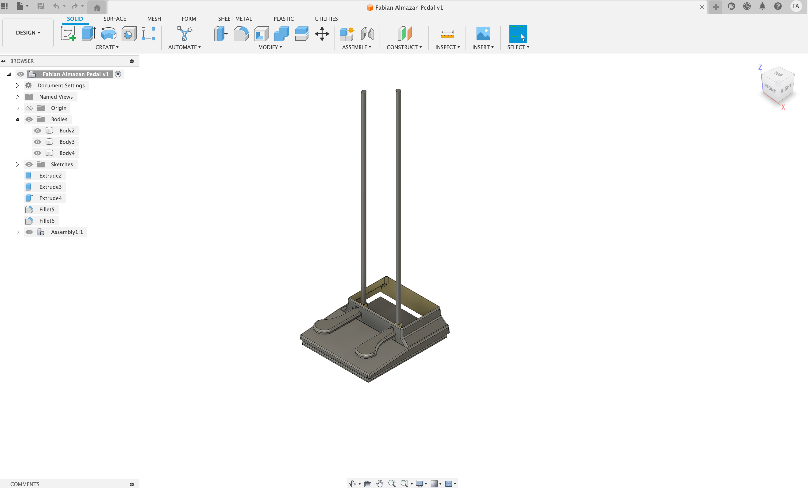

<br>
#### Week 7: Electronic Output Devices
After being able to have the MIDI input data from my piano, the next step was to use this MIDI information to trigger a solenoid accordingly. When the solenoid is placed over the piano strings at a specific node (1/2 = an octave higher than normally sounding string, 1/3 = an octave and a fifth higher than a normally sounding string, 1/4 etc... ) we should hear the harmonic. The right amount of pressure had to be applied to the string and then released milliseconds later to let the string vibrate. This is what the code looks like:
<code>
#include <MIDI.h>
#define SOLENOID_PIN 9 // Define the pin connected to the solenoid
MIDI_CREATE_DEFAULT_INSTANCE();
void setup() {
pinMode(SOLENOID_PIN, OUTPUT); // Set solenoid pin as output
MIDI.begin(MIDI_CHANNEL_OMNI); // Initialize MIDI library to listen to all channels
MIDI.setHandleNoteOn(MyHandleNoteOn); // Set function for handling Note On messages
MIDI.setHandleNoteOff(MyHandleNoteOff); // Set function for handling Note Off messages
}
void loop() {
MIDI.read(); // Check for incoming MIDI messages
}
void MyHandleNoteOn(byte channel, byte pitch, byte velocity) {
delay(100);
digitalWrite(SOLENOID_PIN, LOW); // Activate the solenoid when a note is played
}
void MyHandleNoteOff(byte channel, byte pitch, byte velocity) {
digitalWrite(SOLENOID_PIN, HIGH); // Deactivate the solenoid when the note is released
}
}</code>
I 3D printed a few pieces to be able to suspend the solenoid

Testing 2
Testing 3
<img src="../images/insidepiano.jpg" alt="inside the piano" width="335" height="251">